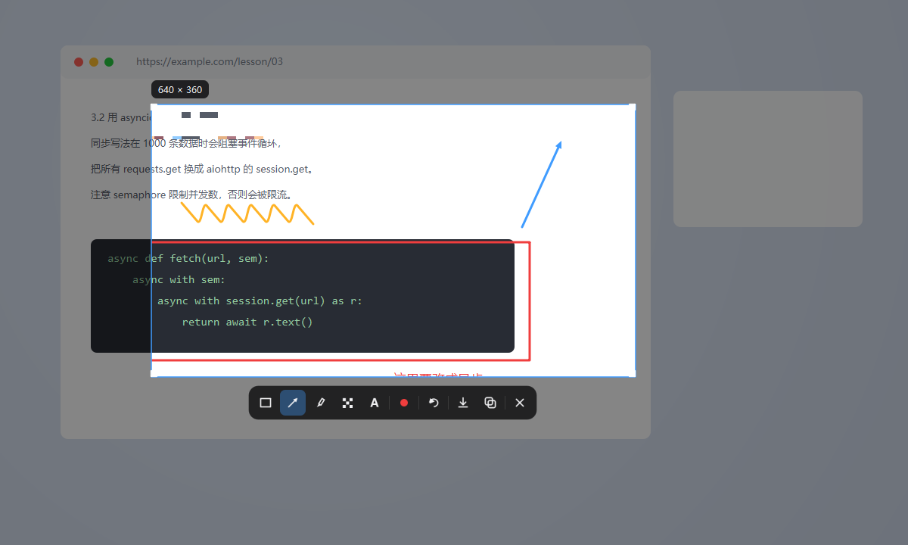
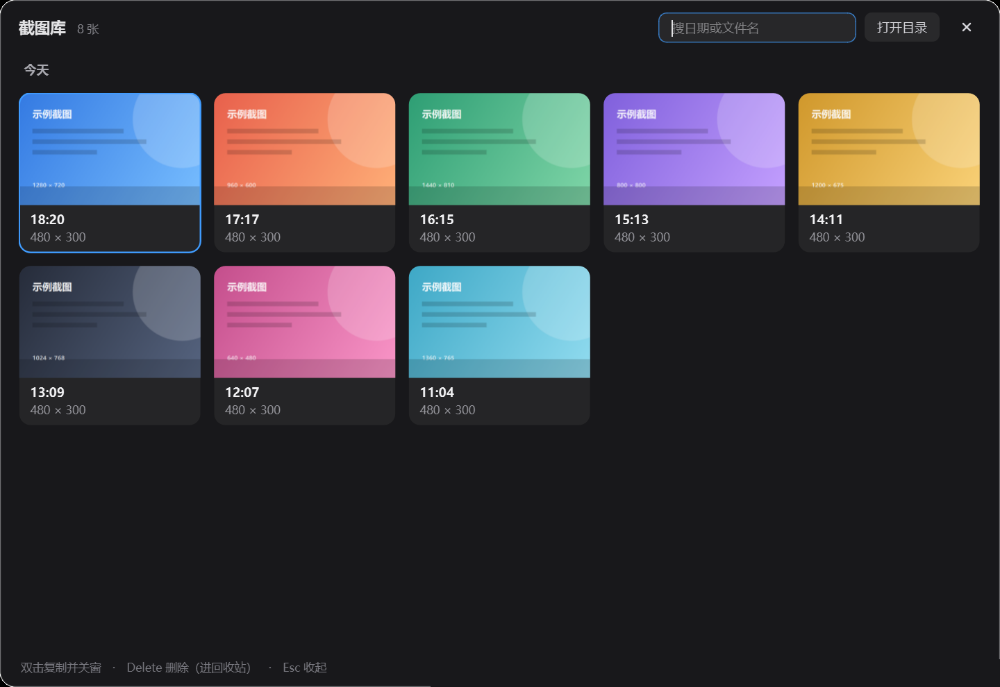
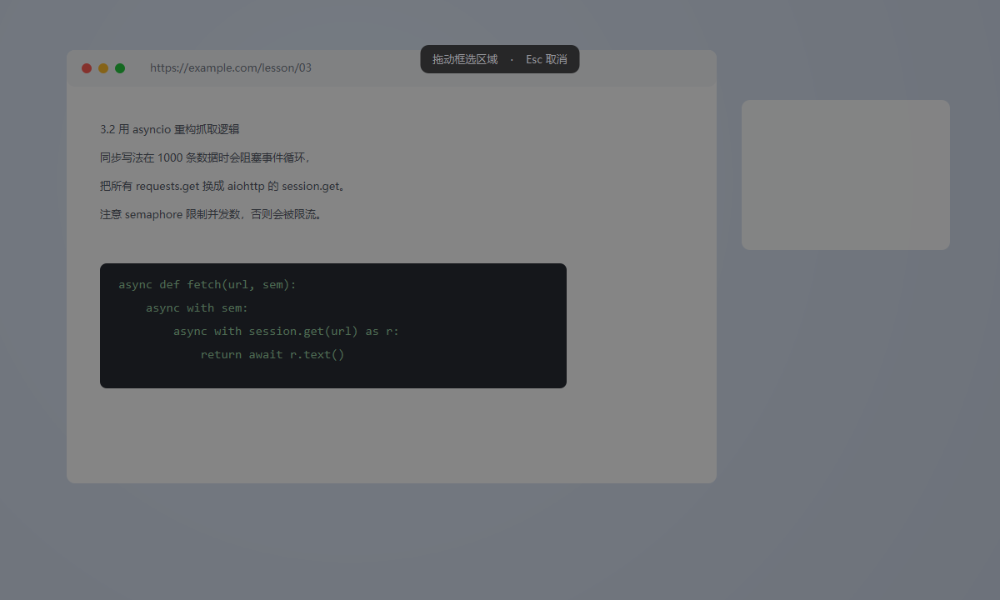

01 / 截图与标注
截图到标注，
中间没有一步多余。
大多数截图工具先开窗口、再选模式、再切工具栏。 Snapshot 把它压成一条直线：按键、框选、画两笔、回车。整条链路不超过四秒。
版本v1.0.0
平台Windows
体积96 MB
安装绿色单文件
网络零请求
更新日志
v1.0.0首个公开版本。
首次运行如提示“未知发布者”，点 更多信息 → 仍要运行。绿色版，下载即用。
为什么有安全提示 · 校验文件
本工具是个人开发的绿色软件，未购买商业代码签名证书。Windows 对从网络下载的未签名程序会统一提示“未知发布者”或“已保护你的电脑”，属正常拦截，并非病毒。点 更多信息 → 仍要运行 即可；或右键文件 → 属性 → 勾选“解除锁定”去掉网络标记。不放心可核对下面的校验值。
SHA256
bed75317935c0c2b129ef9258de430f3b66d0e664482d11c7260727db0b26ee5核对命令：Get-FileHash .\Snapshot.exe -Algorithm SHA256

STEP 01
按下热键
Ctrl + Shift + X，任何界面都能唤起，不切窗口。
STEP 02
拖一个框
拖到哪里截到哪里，松手即锁定，其余部分自动压暗。
STEP 03
画两笔
箭头、方框、荧光笔，工具跟着手走，不用去点工具栏。
STEP 04
回车收工
直接进剪贴板，同时归档到截图库，随时回捞。


01
全局热键
在任意程序里直接唤起，不打断当前任务。
02
即时标注
箭头、矩形、文字、高亮，画完立刻可粘贴。
03
自动归档
每张截图自动入库，按时间与来源检索。
04
托盘常驻
托盘里安静待命，内存占用常年个位数。